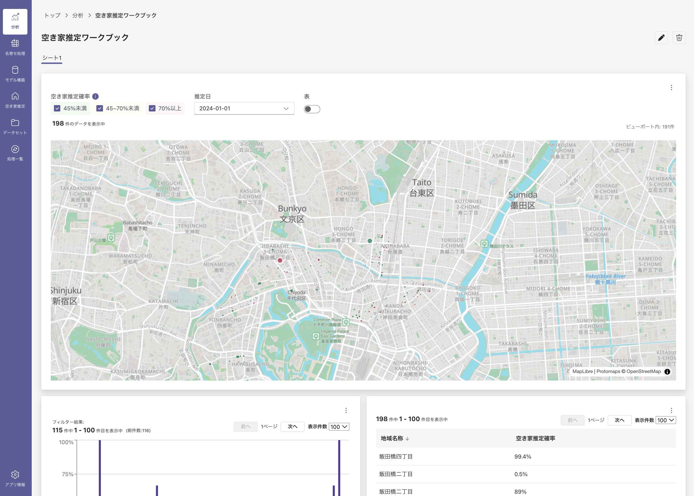
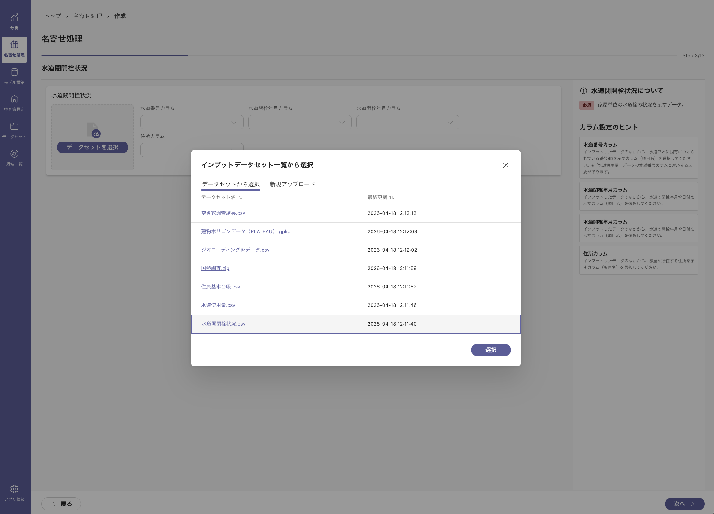
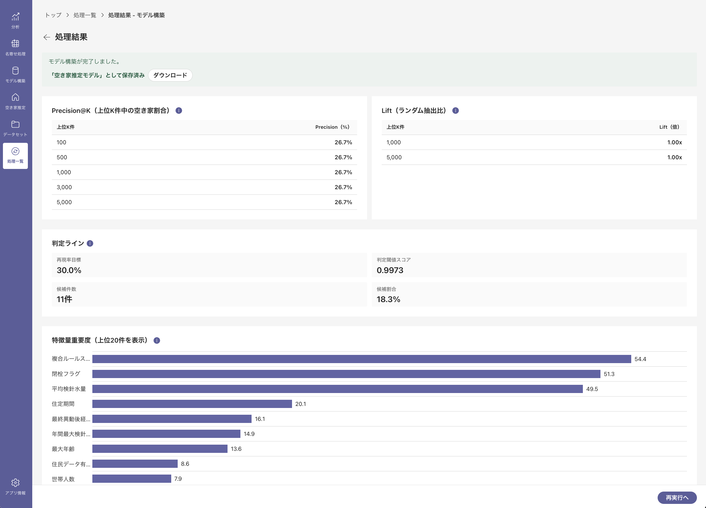
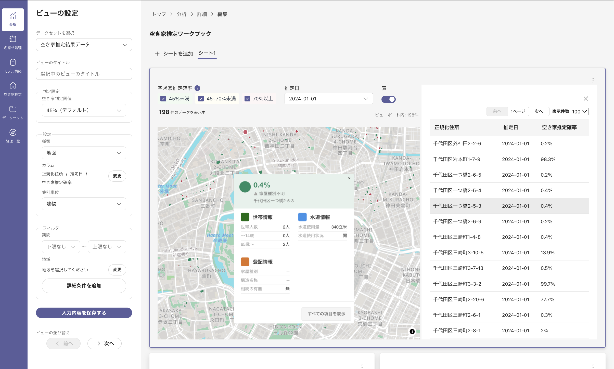
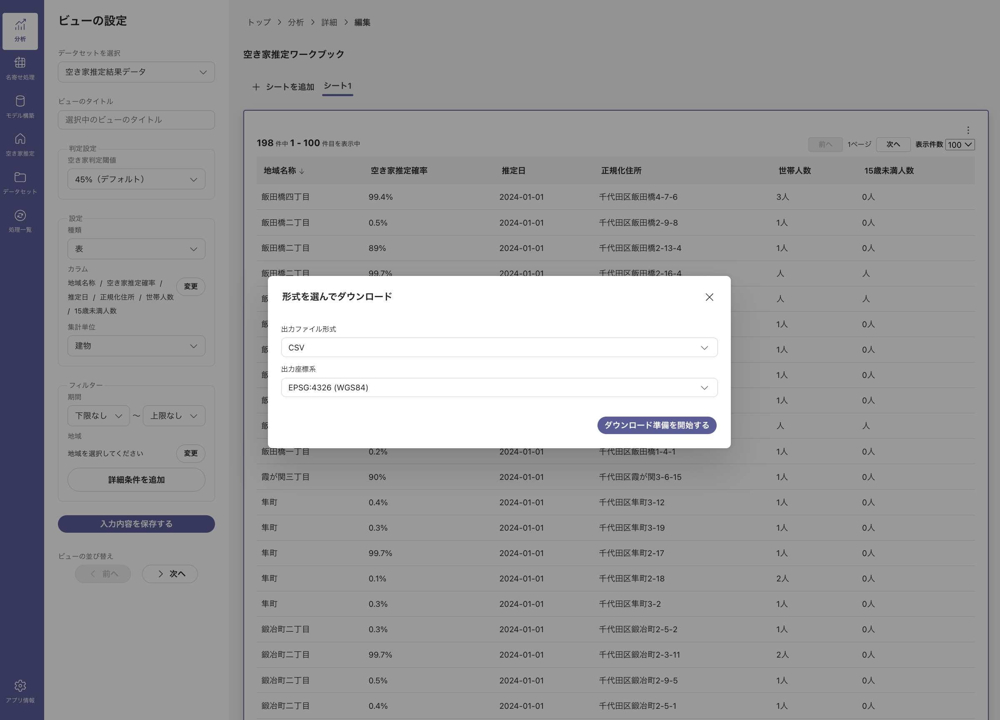
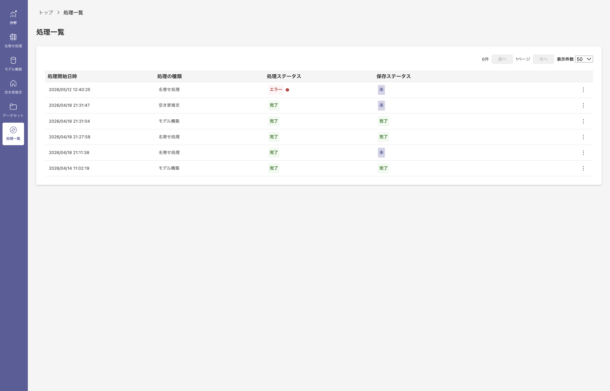

01
調査コストが高い
空き家の実態調査は 5〜10年に一度、費用は 数百万〜1,000万円超。外部データの購入だけで100万円を超えるケースもあり、限られた予算のなかで調査の頻度を上げることは容易ではありません。
国土交通省「Project LINKS」
LINKS SOMAは、行政データと機械学習で空き家を推定する
デスクトップアプリケーションです。システム費用負担なし・庁内完結・専門知識不要。

本事業の背景
空家特措法に基づき、市区町村は空き家の実態把握や対策計画の策定が求められています。
しかし限られた体制の中で、多くの自治体は次の課題を抱えています。
空き家の実態調査は 5〜10年に一度、費用は 数百万〜1,000万円超。外部データの購入だけで100万円を超えるケースもあり、限られた予算のなかで調査の頻度を上げることは容易ではありません。
担当職員の業務時間の 6〜7割 が、問題化した空き家の通報・相談対応に費やされ、早期発見や予防的な対策に手が回らないのが実情です。
次の実態調査まで 5〜10年。その間に空き家は増減し状態も変わりますが、定期的なモニタリング体制を構築できている自治体は少ない状況です。
LINKS SOMAでできること
外部事業者・研究機関への委託や民間企業のデータ購入と比較して、LINKS SOMAには次の特徴があります。
国土交通省がオープンソースとして公開、ライセンス費用はかかりません。候補リスト作成の内製化により、外部データ購入費の削減にもつながります。※必要に応じて、有償ジオコーダーやデータを組み合わせて利用することもできます。
推定処理から分析・出力まで庁内の端末で完結します。外部事業者への委託や、外部サーバーへのデータ送信は不要です。必要なときに自分たちのペースで推定を実行できます。※任意に利用するジオコーディングツールを除く。
AIやエンジニアの専門スキルは不要。令和6・7年度の自治体職員による実証でUI改善を重ねています。※令和7年度の実証では、初めて触った職員の94%が「概ね自力で操作できた」と回答。
まずは 水道使用量データと住民基本台帳 だけで推定を開始できます。
令和7年度の実証ワークショップでは、高齢者福祉（見守り対象把握）、防災（危険家屋特定）、都市計画（区画整理検討）など6領域以上で活用場面が自発的に提案されました。
5つのステップ

STEP 1
水道使用量・住基台帳等を取り込み、住所を正規化して建物単位で突合します。

STEP 2
複数指標を総合し、水道が開栓状態のまま等、目視で見つけにくい空き家候補も数値化します。

STEP 3
エリア・建物単位で空き家の集中度を一目で把握できます。

STEP 4
可能性の高い順にCSV/GeoJSONで出力。GISツールと連携可能です。

STEP 5
データ更新のたびに再推定。大規模調査を待たず状態変化を追跡できます。
令和7年度 実証結果
SOMAを触った職員52名のうち、94%が自力で基本操作を完了
空き家対策のツールとして有用であると83%が回答
推定データを活用した施策立案を自分の業務でも実践したいと81%が回答
土地区画整理事業検討エリアにおいて、土地区画整理事業によらないまちづくりを選択した場合に、空き家の建物や土地などを利用した施策を検討できるのではないかと思います。
SOMAの全国展開によって、こうしたAIを活用したEBPMが「当たり前」の世界になり、また、そのアウトプットを保有データと重ね合わせて分析していくことも「当たり前」の世界になっていけば、本市の統合型GIS（せっかくSOMAがあるのにそれを十分に利活用できる環境がない）をどう整備していく必要があるか？という課題に対しても、予算要求上でも、１つの後押しになり得ると感じました。また、この「当たり前の世界」は、SOMAに必要な内部情報の提供もスムースに行うための後押しにもなり得ると感じました。
グループワークの中で「高齢者一人暮らしの世帯は今後空き家になる可能性が高いため、集中的にアプローチしていく」という意見があり、様々なデータを統合しているからこそ空き家の予防的な対策も行えるのが面白いと感じた。自治体の業務ではこのように地図を活用することでより効率的になるものが多くあると感じるため、今後多様な業務に広まっていくべきだと思う。
今後空き家になりやすい住居や空き家が増えそうな地域の予測ができれば、効果的な啓発活動ができるのではないか。
今までできなかった全戸調査の元資料として、また空家定点観測としても資料として活用したい。
令和8年度 実証事業への参加
データドリブンな空き家対策の裾野を広げるため、最新版のSOMAを用いた実証へ参加・ご協力いただける自治体を募集します。
実証への参加を通じて、SOMAの操作とデータ加工や名寄せ処理、空き家推定等の基礎を理解し、推定結果を用いた運用を試行していただけます。
これまでの実証で培ったノウハウをもとに、導入から活用まで丁寧にサポートいたします。
4団体程度
ご協力いただく内容
8団体程度
ご協力いただく内容
適宜
ご協力いただく内容
※ 参加区分、実証内容、スケジュールは予定であり、事業の進捗状況等によって変更となる可能性があります。
※ 名寄せ処理: SOMAにおける処理の名称。複数データを住所キー等で突合し、同一建物のデータとして統合する処理。
個別のご相談・お問い合わせは、下記メールアドレスまでご連絡ください。